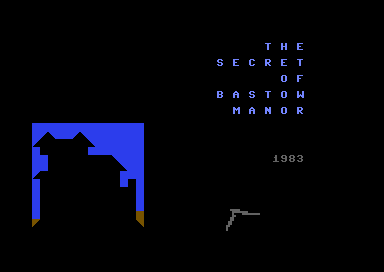

<meta charset="utf-8">
<meta name="viewport" content="width=device-width, initial-scale=1">
<title>{{title}}</title>
<link rel="preconnect" href="https://fonts.googleapis.com">
<link rel="stylesheet" href="https://fonts.googleapis.com/css2?family=Lato:wght@400;700;900&family=IBM+Plex+Mono:wght@400;500&display=swap">
<link rel="stylesheet" href="reference/bastow-page.css">
<!-- tabs -->
<header class="hero">
  <p class="eyebrow">{{platform}} · {{year}} · {{publisher}}</p>
  <h1>{{title}}</h1>
  <p class="sub">Only the first three letters of the verb count, and only the first three letters of the noun.</p>
</header>
<main class="wrap">
<section id="words">
  <h2 class="t">How a typed line is read</h2>
  <p>The game asks <code>&gt; what now ?</code> and takes a whole line. A line of one letter is a compass direction or one of two special commands. A longer line goes to the verb dispatcher at line 360 (<code>$18D5</code>), which looks only at the first three letters of what was typed, and at the first letter to choose among three tables.</p>
  <p>Letters A to H look in the first table, I to P in the second, and Q to Z in the third. Each table is one string of three-letter entries, so the verb is found by the position of its entry, and that position picks the line the program jumps to. The <code>go </code> entry carries its space, so <code>go</code> must be followed by a space to count.</p>
  <div class="plate">
    <p class="fig">Try a line</p>
    <label class="f" for="line">Type what you would type at the prompt</label>
    <input class="tx" id="line" type="text" value="unlock gate" autocomplete="off" spellcheck="false" style="width:100%">
    <p class="out" id="parsed" style="margin-top:14px"></p>
    <p class="cap">The page runs the dispatcher’s rule on what you type: one letter is a compass or special command, otherwise the first letter picks the table and the first three letters pick the verb. Where the handler cuts out the noun is not simulated here.</p>
  </div>
  <p>Each handler then cuts the noun out of the line with its own <code>MID$(P$,k,3)</code>, a column <code>k</code> fixed in the program for that verb, from 4 for <code>go</code> to 8 for <code>throw</code> and <code>unlock</code>. The column suits the verb typed in full, so a shortened verb followed by a noun is read from the wrong place. That consequence was read from the code and not tried in the emulator.</p>
</section>

<section id="verbs">
  <h2 class="t">The twenty-four verbs</h2>
  <table class="t">
    <tr><th>Table</th><th>Verbs, in the table’s order, with the line each jumps to</th></tr>
    <tr><td>A to H</td><td>break (500), climb (530), cut (20), drop (420), eat (30), fill (550), get (400), go (370), help (570)</td></tr>
    <tr><td>I to P</td><td>inventory (430), light (600), look (435), move (620), open (875), press (640), pull (660)</td></tr>
    <tr><td>Q to Z</td><td>quit (700), read (730), remove (750), ring (760), save (774), unlock (800), throw (830), wear (860)</td></tr>
  </table>
  <p>Eighteen of them were used in the emulator by replaying a <a href="about.html#src-4">published walkthrough</a>. Six were not: <code>eat</code>, <code>help</code>, <code>inventory</code> (the one-letter <code>i</code> was used instead), <code>quit</code>, <code>ring</code> and <code>save</code>, which are read from the code only.</p>
  <p>A line the dispatcher does not match prints a stock reply and returns to the prompt. The line <code>get key</code> always asks a second question, <code>which one ?</code>, and takes its answer from the first three letters again.</p>
</section>

<section id="keys">
  <h2 class="t">The one-letter commands</h2>
  <p>A line of a single letter skips the tables. <code>i</code> lists the <a href="gameplay.html#pack">pack</a>, <code>g</code> lists the exits from the place, and <code>n</code>, <code>s</code>, <code>e</code> and <code>w</code> walk. An empty line draws the place again. The game lists these on its own <i>special commands</i> screen, shown after the title.</p>
  <figure class="overview-shot"><figcaption>The game’s own list of its commands, which calls <code>quit</code> “stops hair pulling”.</figcaption></figure>
  <p>The compass letters are checked against two things in order. Special moves come first, lines 320 to 353 (<code>$14E2</code> onward), such as south from the dim room to the tunnel. Then the place’s own list of exits is searched, and a match moves one place number up or down. The <a href="levels.html#joins">Maps page</a> lists every special move.</p>
</section>

<section id="save">
  <h2 class="t">Saving to cassette</h2>
  <p><code>save</code> writes a file called <code>mansav</code> to the cassette (device 1), not to the disk. The file holds fifty-eight state variables, the five pack slots, the 189 object slots with an empty one written as <code>*</code>, and three strings that hold parts of the <a href="discoveries.html#combination">combination</a>. Answering <code>y</code> to the question after the title reads it back in the same order.</p>
  <p>The two files on the disk, <code>BM-1</code> and <code>BM-2</code>, are saves of this kind made by the cracker: one at the very start, one at move 283 with the gold already in the pack. The save and restore routines match each other and those two files, but no game was saved to a tape in the emulator.</p>
</section>
</main>
<script>
(function(){
  var T=[["A to H","breclicutdroeatfilgetgo hel",[500,530,20,420,30,550,400,370,570],["break","climb","cut","drop","eat","fill","get","go","help"]],
         ["I to P","invligloomovopeprepul",[430,600,435,620,875,640,660],["inventory","light","look","move","open","press","pull"]],
         ["Q to Z","quirearemrinsavunlthrwea",[700,730,750,760,774,800,830,860],["quit","read","remove","ring","save","unlock","throw","wear"]]];
  var inp=document.getElementById('line'), out=document.getElementById('parsed');
  function run(){
    var p=inp.value.toLowerCase(); var o;
    if(p.length===0) o='Empty line: the place is drawn again (line 305).';
    else if(p.length===1){
      if(p==='i') o='<b>i</b>: the pack is listed (line 1500).';
      else if(p==='g') o='<b>g</b>: the exits are listed (line 310).';
      else if('nsew'.indexOf(p)>=0) o='<b>'+p+'</b>: a compass move. Special moves are tried first (lines 320 to 353), then the place’s own exits.';
      else o='<b>'+p+'</b>: one letter that is not a command; the compass search finds nothing and the game says it can’t go there.';
    } else {
      var c=p.charCodeAt(0)-32; // typed lower-case letters are the game's PETSCII 65-90
      var i=c>80?2:(c>72?1:0), t=T[i], h=p.slice(0,3), k=-1;
      for(var a=0;a<t[3].length;a++) if(t[1].substr(a*3,3)===h){k=a;break;}
      if(k<0) o='Table '+t[0]+', but no entry matches “'+h+'”: the game prints its stock reply.';
      else o='Table '+t[0]+', entry “'+h+'” is the verb <b>'+t[3][k]+'</b>: the program jumps to line '+t[2][k]+'.';
    }
    out.innerHTML=o;
  }
  inp.addEventListener('input',run); run();
})();
</script>
<footer style="margin:16px 0 0;padding:22px var(--gx) 0;border-top:1px solid #e0ded8;font-family:'IBM Plex Mono',ui-monospace,Menlo,monospace;font-size:12px;color:#80838a"><a href="https://github.com/gamesexplained/gamesexplained" style="color:#1f5fa8;text-decoration:none">GitHub</a> · <a href="https://discord.gg/3V9GWyRDWV" style="color:#1f5fa8;text-decoration:none">Discord</a><br>© Games Explained contributors. Write-ups, facts and symbol maps are available under <a href="https://creativecommons.org/licenses/by-sa/4.0/" style="color:#1f5fa8;text-decoration:none">CC BY-SA 4.0</a>; code under <a href="https://opensource.org/licenses/MIT" style="color:#1f5fa8;text-decoration:none">MIT</a></footer>
